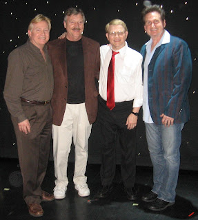
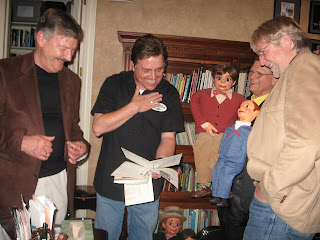

Jim Barber and Todd Oliver
5/5/2011
{kind=link}

By Dale Brown
While I was in Branson I was fortunate enough to attend the Hamner Barber Variety Show, with ventriloquist, comedian and vocalist, Jim Barber and amazing illusionists, Dave and Denise Hamner. This is undoubtedly one of the best shows in a city offering boatloads of family fun and astonishing illusions. The show includes an inspirational multi-media tribute to veterans that brought the audience to their feet.
(Photo right, L-R:
Jim Barber, Dale Brown,
Mark Wade, Dave Hamner.)
Naturally it was Jim's "Barber and Seville" routine that got things off to a hilarious start. If you ever have a chance to see this routine in person, don't miss it. I've seen it many times, and it makes me laugh every time.
After that, Jim sang, danced and vented his way throughout the show using a variety of characters and demonstrating his incredible vent skills. The show includes singers, dancers and of course the amazing magic of the Hamners. This is truly an original and creative show that has something for everyone.
Jim has been a friend of mine for many years and it's good to see his success as an entertainer and co-owner of his own theater.
Next, I headed over to the Jim Stafford Theater to see Todd Oliver and Friends! Todd now has his own show which of course includes his amazing talking dogs and hilarious comedy.
Along with his canine friends Irving, Lucy, and Elvis, Todd introduces a variety of vent characters including Pops, Miss Lilly and Joey. He also joins in with his outstanding Smiling Eyes Band and demonstrates his ability as an accomplished musician and singer.
While Todd has developed his show over the course of several years, this is the first time that his full show has been presented to the Branson audiences. There's lots of audience participation, original music, and riotous comedy. Shows are at 12 noon and include a lunch served prior to the show. If you get to Branson, don't miss it.
{kind=link}

Todd graciously invited me and Mark and Jody Wade to visit his ranch. He shared his very impressive collection of vent figures and vent memorabilia with us and by the time he had emptied all of his closets and boxes, we had run out of room to set things down. Todd is an incredible vent historian and has tracked down many "old time" vents and talked with them and learned their stories.
Todd also has a big heart and shares his home with a lot (I lost count) of abandoned dogs that he lovingly cares for. All of the dogs in his show are from shelters.
So if you're a fan of ventriloquism and great entertainment get to Branson and buy tickets for the Hamner Barber Variety Show and The Todd Oliver Show. You won't be disappointed.